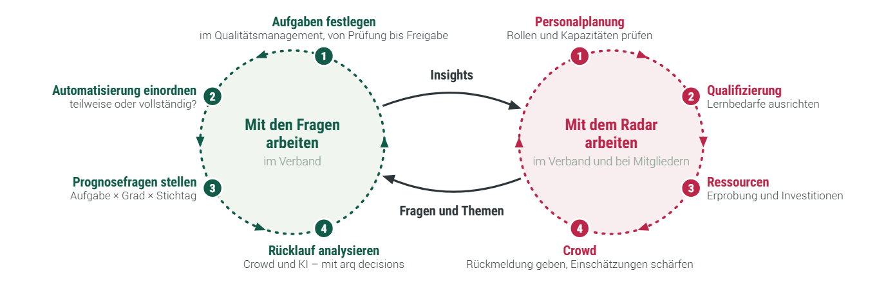
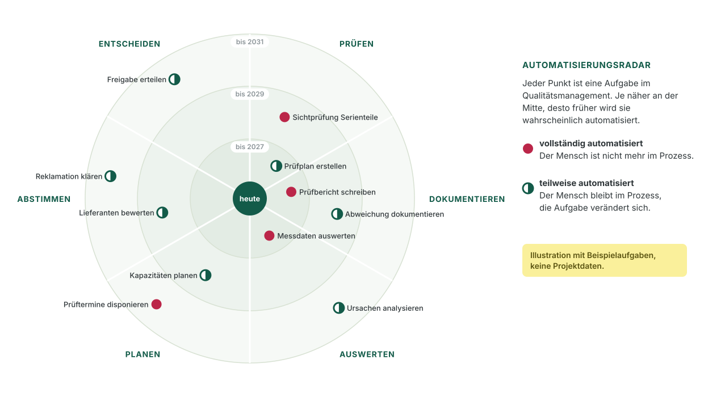

Fallbeispiel
Nimmt die Automatisierung den Menschen aus dem Prozess?
Ein Industrieverband lässt eine Crowd und eine KI einschätzen, welche Aufgaben im Qualitätsmanagement bis wann teilweise oder vollständig automatisiert ausgeführt werden. Daraus entsteht ein Automatisierungsradar für Personalplanung, Qualifizierung und den Einsatz von Ressourcen.
Fallbeispiel · Industrieverband
Die Leitfrage
Die Ausgangslage
Die Debatte über KI und Arbeit bleibt oft allgemein. Für die Planung braucht ein Industrieverband eine Einschätzung je Aufgabe im Qualitätsmanagement: Wird sie teilweise automatisiert, und der Mensch bleibt im Prozess? Oder vollständig, sodass niemand mehr eingreift? Und bis wann? Aus diesen Einschätzungen entsteht ein Radar, das Personal, Qualifizierung und Investitionen auf dieselbe Grundlage stellt.
Ein Radar aus Aufgaben, Automatisierungsgraden und Zeitpunkten
Aufgabe
Ein breites Spektrum typischer Aufgaben im Qualitätsmanagement, von der Prüfung bis zur Freigabe, jede klar abgegrenzt.
Automatisierungsgrad
Teilweise: Der Mensch bleibt im Prozess, die Aufgabe verändert sich. Vollständig: Die Aufgabe läuft ohne menschliches Eingreifen.
Stichtag
Ein konkreter Zeitpunkt macht jede Einschätzung später überprüfbar.
Wie Fragen und Radar ineinandergreifen

Im ersten Kreis arbeitet der Verband mit den Fragen: Aufgaben festlegen, Automatisierung einordnen, Prognosefragen stellen und den Rücklauf von Crowd und KI analysieren. Im zweiten Kreis arbeitet er mit dem Radar, für Personalplanung, Qualifizierung und Ressourcen.
Zwei Perspektiven auf dieselben Fragen
Die Crowd bewertet die Prognosefragen. Parallel liefert eine fortlaufende KI-Prognose eine zusätzliche Perspektive. Abweichungen werden zum Ausgangspunkt für die Diskussion: Welche Informationen fehlen? Welche Annahmen tragen die Einschätzung? Die KI ersetzt dabei weder die fachliche Bewertung noch die Verantwortung für Entscheidungen.
Vom Prognoseverlauf zur Entscheidung
Das Reporting zeigt die Entwicklung der Prognosen, Konfidenz und semantische Analysen der Begründungen. Der Bezug zur Planungsfrage hilft, Veränderungen einzuordnen und Annahmen regelmäßig zu überprüfen. Ein Automatisierungssignal ist ein Anlass zur Prüfung, keine automatische Personalentscheidung.
So entsteht das Radar

Jede Aufgabe bekommt ihren Platz im Radar: im Aufgabenfeld, auf dem Ring ihres wahrscheinlichen Stichtags und mit dem erwarteten Grad der Automatisierung. So sieht der Verband auf einen Blick, wo der Mensch im Qualitätsmanagement bleibt und wo Aufgaben voraussichtlich ohne ihn laufen.
Wird bis zum 31.12.2028 die visuelle Prüfung von Serienbauteilen in den meisten Unternehmen der Branche ohne menschliche Freigabe ausgeführt?
Aufgabe: visuelle Prüfung · Grad: vollständig, ohne Freigabe durch einen Menschen · Stichtag: 31.12.2028
Beispiel zur Veranschaulichung.
Wofür das Radar genutzt wird
Personalplanung vorbereiten
Veränderungen auf Ebene einzelner Aufgaben diskutieren und mögliche Konsequenzen für Rollen und Kapazitäten frühzeitig prüfen.
Qualifizierung ausrichten
Lernbedarfe dort untersuchen, wo sich Aufgaben und die Zusammenarbeit mit automatisierten Systemen voraussichtlich verändern.
Ressourcen priorisieren
Beobachtung, Erprobung und Investitionsüberlegungen an konkreten Entwicklungssignalen ausrichten.
Weitere Fallbeispiele
Wohin entwickelt sich die regionale Wertschöpfung?
Eine Kammer verbindet Prognosefragen, menschliches Wissen und KI für Prioritäten und die Orientierung ihrer Mitglieder.
Welche Beratung brauchen Verwaltungen noch?
Ein Fachverband im öffentlichen Dienst bringt unterschiedliche Erwartungen in ein gemeinsames Bild möglicher Zukünfte, mit Signalen für den richtigen Zeitpunkt.
Wie viele Fachleute braucht die Qualität, wenn KI mitprüft?
Ein internationaler Industriekonzern schätzt mit Fachleuten aus seinen Werken ein, wie KI, Zulassungsregeln und der Markt für Fachleute die Qualitätsarbeit verändern.
Ihr Thema ist nicht dabei?
Die Fallbeispiele zeigen einen Ausschnitt. Beschreiben Sie uns Ihr Thema, und wir schlüsseln es für Sie auf.